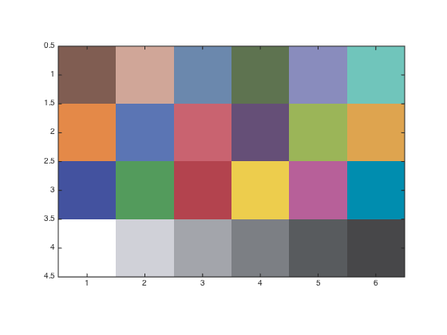
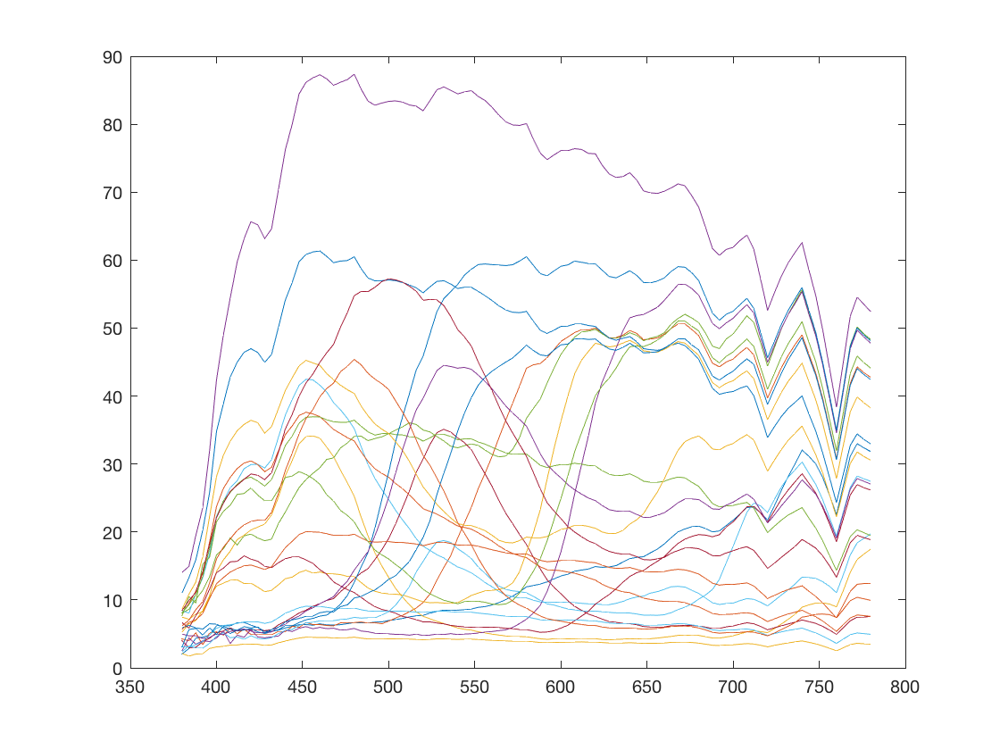
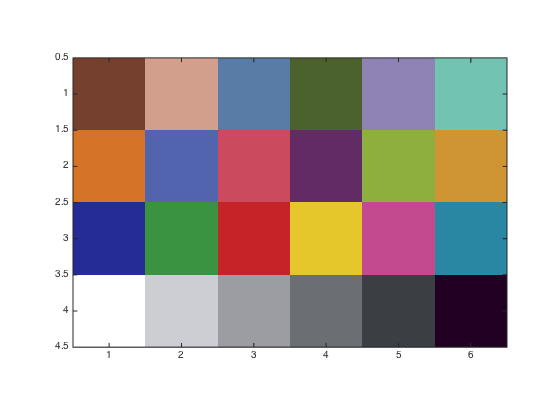
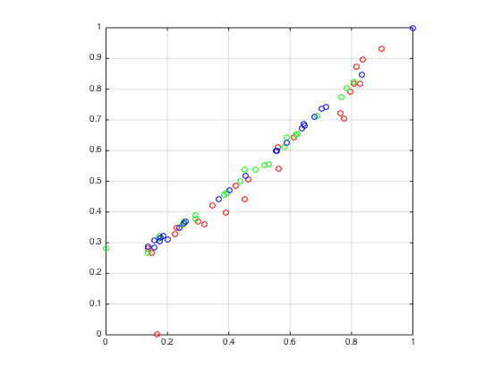
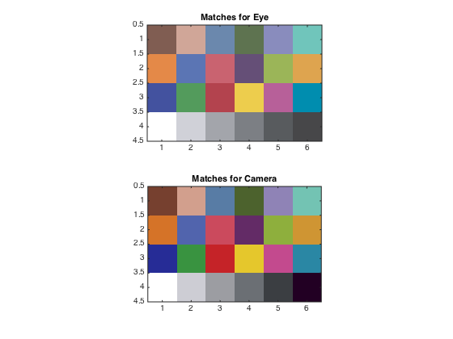

t_Rendering
Review of rendering images on a display
Class: Psych 221/EE 362 Tutorial: Examples of rendering images Author: Wandell Purpose: Explain how to render illuminant and surface reflectance data on a screen.
Date: 01.02.96 Duration: 20 minutes
Matlab 5: Checked 01.06.98 BW Matlab 7: Checked 01.04.08 BW R2004b : Checked and updated to use ieReadSpectra 01.03.15 DHB
Contents
- Initialize
- Load data for a default monitor and the XYZ functions
- Load in the surface reflectances of the Macbeth ColorChecker.
- Render the surfaces for the monitor using the XYZ color matching functions
- Doing the match when you only know the RGB values
- Compare the linear rgb values we use are doing the match the two different ways.
- End
Initialize
ieInit;
Load data for a default monitor and the XYZ functions
d = displayCreate('LCD-Apple'); wave = displayGet(d,'wave'); phosphors = displayGet(d,'spd'); monitorGam = displayGet(d,'gamma'); monitorInvGam = displayGet(d,'inverse gamma'); % load cmatch/monitorGam XYZ = ieReadSpectra('XYZ',wave);
Load in the surface reflectances of the Macbeth ColorChecker.
Also, we know the color appearance of a few of them so let's give them labels.
% load macbethChart; %fName = fullfile(isetRootPath,'data','surfaces','macbethChart.mat'); macbethChart = ieReadSpectra('macbethChart',wave); % Ooops ... these numbers aren't right. Must find proper chip numbers greenChip = 7; redChip = 11; whiteChip = 4; grayChip = 12; % There are 24 surfaces, so we prepare a small matrix (6 by 4) with 24 % entries. Later, we will use this matrix to display the 24 surfaces. % The way we will do the display is to build a colormap with 24 % rows. Each row will describe the (r,g,b) values for one surface. macbethImage = reshape(1:24,4,6); % We can't display a pure surface. We always need to display a % surface under a particular light. Hence, an important thing to % remember during this rendering exercise is that we have chosen % a particular light. Later, you might come back to this point % and load in a different choice for a light. % % For now, load in the D65 illuminant and call it the lgt. lgt = ieReadSpectra('D65',wave);
Render the surfaces for the monitor using the XYZ color matching functions
First, compute the XYZ values of the macbeth colorchecker under the default illuminant. These values describe how the human visual system will encode the light reflected from each of the surfaces. You should check that this calculation makes sense to you by writing it out as a matrix tableau. Note the use of the diag() function ....
macbethXYZ = XYZ'* diag(lgt)* macbethChart; % Here, we determine the linear RGB settings we will need in % order to create the same XYZ values on the default monitor. % Your monitor may not be the same, of course. macbethLinearRGB = inv(XYZ'*phosphors)*macbethXYZ; % Now, we haven't set any absolute units for this match. For % example, we don't know what the absolute intensity of the light % source is. In general, we can't match absolute intensities % very well across viewing conditions. For example, if the % surface is outdoors the outdoor light intensity is several % orders of magnitude greater than the possible output of the % monitor. % % So, we are going to ignore the absolute intensities. Instead, % we are simply going to assume that the white surface will be % the brightest element of the image. Consequently, we are going % to scale the RGB values so that the white surface % corresponds to the largest displayable value. % % We are representing the relationship between the linear RGB % values and the RGB values in the frame-buffer using a look-up % table that accounts for for the monitor nonlinearity. This % lookup table stores the inverse gamma function, and we have % called it monitorInvGam (both here and in other tutorials). % So, let's scale the RGB values so that they fall within the % range set by that table. maxQ = size(monitorInvGam,1); macbethLinearRGB = round(maxQ*macbethLinearRGB/(max(macbethLinearRGB(:)))); % Now, we are going to use a trick that people often do -- just a % trick, no deep principles here -- for setting the absolute % levels. We are going to assume that: THE WHITE SURFACE XYZ % should correspond to the MONITOR DISPLAY AT [255,255,255]. % This is not exactly right. In fact, it is not right at all. % If you have good calibration methods, you don't need to do % this. But, people rarely have good calibration methods so they % do this. Let's carry on, though we will talk about this in class. % Here are the RGB settings for the white chip wht = macbethLinearRGB(:,whiteChip); % Scale ALL of the RGB values so that the white chip has a % framebuffer value that is roughly in the (1,1,1) vector % direction. macbethLinearRGB = diag( (1 ./ wht ) ) * macbethLinearRGB; macbethLinearRGB = ieScale(macbethLinearRGB,1,maxQ); % Correct for the monitor nonlinearity. macbethRGB = monitorInvGam(round(macbethLinearRGB)); % There are 24 chips, and we have computed the proper display % intensities for each one of them. We place an image that % consists of the list of values 1:24, into the frame-buffer. We % set the color table values to the proper r,g,b values. macbethColorMap = macbethRGB'/max(macbethRGB(:)); % Now, we put up this 6 x 4 matrix and set the image to have the % right color map. figure; colormap(macbethColorMap) image(macbethImage); axis image % Voila.
Doing the match when you only know the RGB values
Now, suppose that you don't know very much about either the display or, say, a digital camera that you used to acquire the data you want to display. What do you do?
Here, we are going to make some simulated rgb data from a digital camera. The strategy we will use to match the display and the original image is to MEASURE THE DISPLAY OUTPUT WITH THE DIGITAL CAMERA. Then, we will try to adjust the display output so that it causes the same RGB signal at the camera as the original macbeth Color Checker image.
% Once again, we compute the color signal from the color checker % under some light. colorSignal = diag(lgt)*macbethChart; figure; plot(wave,colorSignal) % For this simulation, we calculate the expected camera rgb % signals from each of the color signals. sensors = ieReadSpectra('camera', wave); cameraRGB = sensors'* colorSignal; % Next, we need to know how the camera would respond to light % from each of the monitor phosphors. This will permit us to % build a matrix that converts from the linear monitor % intensities to the camera RGB responses. We will call this % matrix mon2camera. This will be a 3 x 3 matrix. The first % column describes the RGB values when the red phoshor is on, the % second and third when the green and blue are on respectively. % % Experimentally, we could obtain these values just by taking a % camera picture of the monitor. For example, suppose we just % turn on the red phosphor, and we use the camera to take a % picture of the red phosphor. % % In this case, though, we know the sensors. So, rather than % asking you to do the experiment (but do it if you would like). % However, given that we know the sensors, we can compute this % matrix simply as: mon2camera = sensors'*phosphors; % This tells us how to set the monitor (linear) RGB values in % order to match a set of (linear) CAMERA RGB values. N.B. The % human eye is not involved in this calculation. We are % adjusting the monitor output so that the camera will have the % same responses. There is no mention of people, CIE standards, % or the like in any of this calculation. camera2mon = inv(mon2camera); % We now use the matrix camera2mon to compute the display rgb % values macbethCameraLinearRGB = camera2mon*cameraRGB; % Again, to make a decent picture we will need to correct for % the framebuffer nonlinearity. And, we don't really have % much choice about the absolute intensity of various quantities. % So, let's perform the same set of calculations we did before in % order to render a display. macbethCameraLinearRGB = ... round(1000*macbethCameraLinearRGB/(max(macbethCameraLinearRGB(:)))); % Because we don't really know the properties of this display, we % are going to arrange things so that the known white chip is % displayed as the white of the monitor. This is a cheap trick % that often makes people and managers happy. % wht = macbethCameraLinearRGB(:,whiteChip); macbethCameraLinearRGB = diag( (1 ./ wht ) ) * macbethCameraLinearRGB; macbethCameraLinearRGB = ieScale(macbethCameraLinearRGB,1,size(monitorInvGam,1)); macbethCameraRGB = monitorInvGam(round(macbethCameraLinearRGB)); % There are 24 chips, and we have computed the proper display % intensities for each one of them. We place an image that % consists of the list of values 1:24, into the frame-buffer. We % set the color table values to the proper r,g,b values. % macbethCameraColorMap = ieScale(macbethCameraRGB,0,1)'; figure; colormap(macbethCameraColorMap) image(macbethImage); axis image 
Compare the linear rgb values we use are doing the match the two different ways.
figure, clf plot(macbethCameraColorMap(:,1),macbethColorMap(:,1),'ro'), hold on plot(macbethCameraColorMap(:,2),macbethColorMap(:,2),'go'), hold on plot(macbethCameraColorMap(:,3),macbethColorMap(:,3),'bo'), hold off axis equal, axis square, grid on % Finally, here is a display with the two images next to one another. figure bothMap = [macbethColorMap; macbethCameraColorMap]; colormap(bothMap) subplot(2,1,1) image(macbethImage); axis image title('Matches for Eye') subplot(2,1,2) image(macbethImage+24); axis image title('Matches for Camera') 